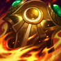
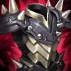
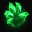

Tanque
/
Mago
Dificultad Moderada
HABILIDADES


PASIVA • HORA FELIZ
Gragas se cura periódicamente tras usar una habilidad.
1 • BARRIL RODANTE
Gragas rueda su barril hasta una ubicación y puede activarlo para hacerlo explotar. Explotará por sí solo después de 3 seg. Los enemigos impactados por la explosión tendrán una reducción de velocidad de movimiento.
2 • FURIA EBRIA
Gragas toma un buen trago de cerveza de su barril durante 1 seg. Al terminar de beber, estará potenciado por la bebida e infligirá daño mágico a todos los enemigos cercanos con su siguiente ataque básico y reducirá el daño que reciba.
3 • LANZAMIENTO DE BARRIGA
Gragas carga en una dirección, choca con la primera unidad enemiga que se encuentra y les inflige daño a todas las unidades enemigas cercanas y las aturde.
DEFINITIVA • TONEL EXPLOSIVO
Gragas rueda su barril hasta una ubicación, lo que inflige daño y lanza hacia atrás a los enemigos atrapados en el radio de la explosión.
CONFIGURACIÓN
OBJETOS
-

Égida de Fuego Solar
3000+500 Vida Máxima
+15 Aceleración de Habilidad
INMOLAR: Inflige 16-25 de daño mágico + un 0.8% de Vida adicional por segundo a enemigos cercanos. Dañar campeones o monstruos épicos con Inmolar aumenta su daño en un 8% por 5 seg. Se acumula hasta 6 veces.
TOQUE LLAMEANTE: Al tener el máximo de acumulación de Inmolar, los ataques queman a los enemigos cercanos con el daño de Inmolar durante 3 seg.
Inmolar inflige 125% de daño a súbditos y montruos. -

Apariencia Espiritual
2900+350 Vida Máxima
+100% Regeneración de Vida
+45 Resistencia Mágica
+10 Aceleración de Habilidad
BENDITO: Aumenta todos los efectos de curación, regeneración y de drenar sobre ti mismo en un 30%.
-
Guantelete del Hijo del Hielo
2700+50 Armadura
+450 Maná Máximo
+25 Aceleración de Habilidad
ESPADA ENCANTADA: Usar una habilidad provoca que el siguiente ataque dentro de 10 seg inflija daño físico adicional igual al 100% de Daño de Ataque básico en una zona. También crea un campo gélido durante 2 seg que ralentiza a los enemigos dentro de él en un 30%. La armadura aumenta el tamaño del campo gélido. (1.5 seg de Enfriamiento).
El daño se reduce contra estructuras. -

Cota de Espinas
2900+200 Vida Máxima
+75 Armadura
ESPINAS: Recibir un ataque refleja 25 de daño mágico +10 de armadura adicional al atacante e inflige un 40% de Heridad Graves por 3 seg si es un campeón. Inmovilizar campeones enemigos también inflige un 60% de Heridas Graves por 3 seg.
Heridas Graves reduce la efectividad de las curaciones y efectos regenerativos. -

Presagio de Randuin
2800+400 Vida Máxima
+55 Armadura
BLINDADO: Reduce el daño recibido de golpes críticos un 15%.
ACERO FRÍO: Reduce la velocidad de ataque de los enemigos en un 15% durante 1.5 seg al recibir un ataque. -

Punteras de Acero Revestidas
1000CALZADO: +40 de Velocidad de Movimiento.
MEJORADO: +15 de Armadura.
BLOQUEADO: Bloquea un 15% del daño de ataques.
CARRERA (ACTIVA): Aumenta la Velocidad de Movimiento un 15% durante 3 seg. Infligir o recibir daño de campeones desactiva los efectos de Carrera. (60 seg de enfriamiento). -

Encantamiento de Teleportación
800TELEPORTACIÓN (ACTIVA): Tras 3.5 seg de canalización, teletransporta tu campeón a un campeón, estructura o centinela aliado. (180 seg de enfriamiento).
RUNAS Y HECHIZOS
-

Agarre del Perpetuo
Cada 4 seg en combate, tu siguiente ataque contra un campeón se potenciará según tu vida máxima.
CURACIÓN: 2% de tu Vida Máxima
Aumenta tu Vida permanentemente en 5
DAÑO ADICIONAL: 3% de tu Vida Máxima como daño mágico
Los efectos se reducen en un 40% para campeones a distancia. -

Brutalidad
Obtienes 7 de Daño de Ataque y un 2% de Penetración de Armadura o 14 de Poder de Habilidad y un 2% de Penetración de Magia (adaptable).
-

Coraza Ósea
Después de recibir daño de un campeón, las siguientes 3 habilidades o ataques de un campeón contra ti dentro de 1.5 seg infligen de 30 a 60 (basado en nivel) menos daño (45 seg de Enfriamiento).
-

Dulces Frutos
Aumenta la curación de Frutamiel en un 25%. Cada vez que tú o un aliado cercano coma una Frutamiel, obtienes 20 de oro.
-

Ignición
ENFRIAMIENTO: 90 seg.
Prende fuego al campeón enemigo objetivo, lo que inflige 60 de daño verdadero (60-410 basado en nivel) durante 5 seg y le aplica un 60% de Heridas Graves mientras dure el efecto. -

Destello
ENFRIAMIENTO: 150 seg.
Te teletransportas una distancia corta hacia delante o hacia la dirección objetivo.
CÓMO JUGAR GRAGAS
Gragas es un campeón basado en daño mágico con movilidad, control de masas, daño, autocuración y capacidad de tanque. Esta construcción es para el carril superior, sin embargo, Gragas también se puede jugar en el carril central y en la jungla. Gragas está bien al principio del juego, pero a medida que el juego entra en el juego medio / tardío, puedes realizar algunos combos agradables para llevar a cabo las peleas en equipo. Uno de los combos es usando el Lanzamiento de Barriga de Gragas (tercera habilidad), una vez que golpeas su Lanzamiento de Barriga puedes usar su Barril rodante (primera habilidad) y Tonel Explosivo (Ultimate) para hacer mucho daño.